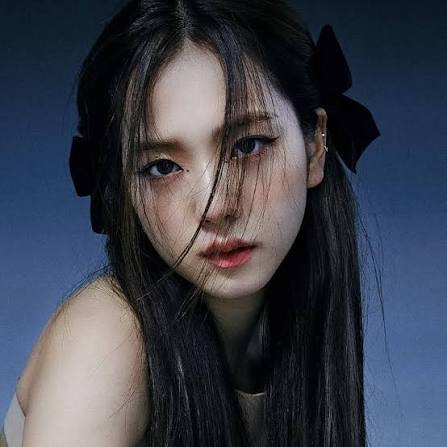

Kim Jisoo (김지수) nació el 3 de enero de 1995 en Gunop, Corea del Sur. Tiene un hermano mayor (Junghun) y una hermana mayor (Jiyoon). Cuando era niña, Jisoo tenía muchos intereses. Practicaba taekwondo y quería ser autora o pintora. Asistió a la Escuela de Artes Escénicas de Seúl y se unió al Club de Drama de allí. En 2011, Jisoo participó en una audición de YG Entertainment y posteriormente fue aceptada como aprendiz.
El 8 de agosto de 2016, Jisoo debutó como miembro del grupo de chicas de cuatro miembros Blackpink. Las otras tres integrantes de Blackpink son: Lisa, Jennie y Rosé. El Álbum debut “Square One” fue un éxito total. los sencillos “Whistle” y “Boombayah” encabezaron tanto el Gaon Digital Chart como el World Digital Songs Chart de Billboard de EE. UU. ¡Es el comienzo de una carrera sin precedentes!
